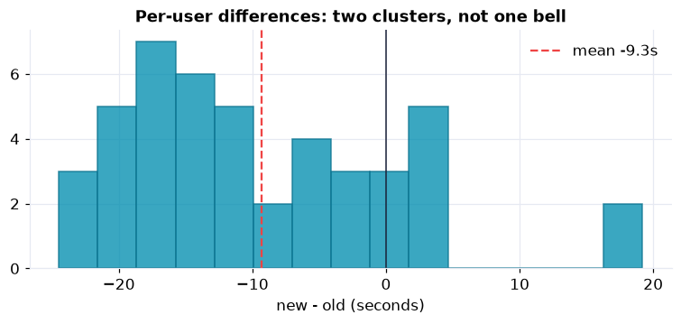
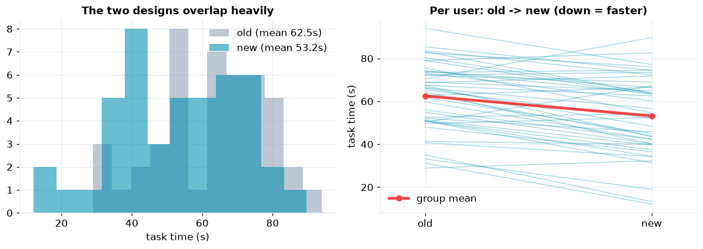

When you can measure the same subjects under two conditions, you should. A paired (within-subject) design uses each person as their own control, so the enormous person-to-person differences that would otherwise swamp your effect simply cancel. The analysis then works on the within-person differences, tested with the paired t-test or, when those differences are not bell-shaped, the Wilcoxon signed-rank test.
It applies the inference toolkit of Part XIII to a within-subject design: the paired t-test and its Wilcoxon fallback, an effect size beside the p-value, and the payoff of pairing, far more power than comparing two groups.
The Study, and the Data
A team redesigned the checkout flow. To measure the effect cleanly, they had 45 users complete the same task on both the old and new design, counterbalancing which came first so that practice could not be mistaken for a design effect. The outcome is task completion time in seconds.
One row per user: user_id, first_design (which design they
saw first, for the counterbalancing check), and the two task times old_design_seconds and
new_design_seconds.
The Pairing Insight (Steps 3–4)
Users differ enormously in baseline speed, with a standard deviation of about 16 seconds, far bigger than the effect we are hunting. In aggregate the two designs' time distributions overlap almost completely. But connect each user's two times and the pattern is unmistakable: person after person gets faster. That is the power of pairing, it tests the change within each user, where the big between-user spread cancels.
The Differences, and the Right Test (Steps 5–7)
Compute the differences, and check their shape
The mean improvement is about 9 seconds faster on the new design. But the per-user differences are not a clean bell: there is a big cluster of users who got much faster and a second cluster near zero who barely changed. Shapiro-Wilk confirms it (p ≈ 0.01, non-normal). Shape matters, because it decides which test to trust.

Two clusters, not one bell: most users much faster, a minority barely changed. A bimodal difference like this is why the distribution-free Wilcoxon test is the honest choice here.
Paired t-test, and the Wilcoxon fallback
The paired t-test is emphatic, t(44) = −6.17, p ≈ 2×10⁻⁷, with a 95% confidence interval on the mean improvement of roughly −12 to −6 seconds. Because the differences are non-normal we lead with the distribution-free Wilcoxon signed-rank test, which needs no bell-curve assumption and agrees decisively (p ≈ 6×10⁻⁶, with 35 of 45 users faster). When a paired difference is skewed or bimodal, report Wilcoxon first and the t-test as a familiar cross-check.
Effect Size, and Why Pairing Wins (Steps 8–9)
The improvement is not just detectable, it is large: about 15% of the old completion time, a paired effect size of Cohen's dz ≈ −0.9. And now the payoff of the design. Analyze the very same numbers as two independent groups and the effect nearly vanishes, t falls from −6.2 to −2.6 and the p-value climbs from 2×10⁻⁷ to 0.01. Nothing about the effect changed; the unpaired test simply cannot see it through the between-user variance that pairing cancels.

The two designs overlap in aggregate (left), but connecting each user's pair (right) reveals the consistent within-user improvement that pairing tests directly.
Nuance & Communicate (Steps 10–12)
Before the memo, two honest notes. The bimodal differences are a real split, most users improved a lot while a sizable minority barely changed, worth a follow-up on who the non-responders are. And because users did the task twice, the design counterbalanced the order; the Take It Further notebook confirms order did not drive the result (p ≈ 0.68).
Memo to the product team
In a within-subject test, 45 users completed the checkout task about 9 seconds faster on the new design (roughly 15% quicker), a large and statistically strong improvement (Wilcoxon p ≈ 6×10⁻⁶; paired t p ≈ 2×10⁻⁷).
Why the within-subject design
Because each user tried both designs, the test controls for the large differences in how fast people work. That is not a technicality: a simple two-group comparison of the same effect would have been only marginal, and a fresh between-subjects study of the same size would have missed it more than half the time.
One nuance
The gain is concentrated: most users got much faster, but a sizable minority saw little change. Worth investigating who they are before a full rollout.
Recommendation
Ship the new design, and follow up on the non-responders to see where it helps least.
Run the whole analysis in Python
The companion notebook is the full 12-step paired workflow: it plots the pairs, shows how the between-user spread swamps a group comparison, computes and shape-checks the differences, runs the paired t-test and the Wilcoxon signed-rank test with a confidence interval and Cohen's dz, contrasts paired against unpaired to show the power gain, and segments the responders, all library-first with scipy.
View opens the rendered notebook instantly.
Open in Colab runs it live. To run locally, install numpy, pandas,
matplotlib, scipy, and openpyxl.
🎓 Key Takeaways
- ✓Pair when you can: measuring each subject under both conditions cancels the between-subject variance that otherwise hides the effect.
- ✓Analyze the differences: the paired t-test and Wilcoxon signed-rank test both work on each subject's within-person change.
- ✓Match the test to the shape: the differences were bimodal (Shapiro p ≈ 0.01), so Wilcoxon led and the t-test cross-checked.
- ✓Report the effect size: about 9 seconds (15%) faster, Cohen's dz ≈ −0.9, a large effect, not just a significant one.
- ✓Pairing buys power: the same effect gave a paired t of −6.2 but an unpaired t of only −2.6, a between-subjects study would often have missed it.
Take It Further
Five ways to pressure-test the finding in the companion notebook:
Did the order matter?
Check that users who saw the old design first improved by the same amount as those who saw the new one first.
first_design.A ladder of paired tests
Run the paired t-test, Wilcoxon, and the assumption-free sign test, and watch the verdict survive each.
ttest_rel, wilcoxon, binomtest on the count faster.A bootstrap interval
Resample users to build a distribution-free confidence interval for the mean improvement.
The power of pairing
Simulate the paired design against a between-subjects design at the same size and compare their power.
Who did not benefit?
Split responders from non-responders and see whether baseline speed explains the difference.
All five, worked in a companion notebook
A second notebook, Take It Further, rebuilds the Chapter 138 study and works every extension with visuals and explanations: a counterbalancing check, a robustness ladder from the sign test to the t-test, a bootstrap interval, a power-of-pairing simulation, and a responder analysis.
Quiz: Test Yourself
Eight questions on paired designs, from the pairing insight to choosing the right test. Answer them, hit Check Answers, and keep refining until you score 100%. Your progress is saved.
We compared two conditions on the same subjects. Next we ask how two variables move together. Covariance opens Part XIV on correlation and association, measuring the direction and strength of a relationship between two quantities.